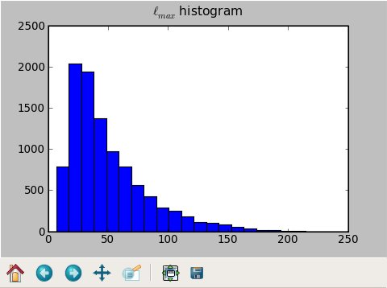
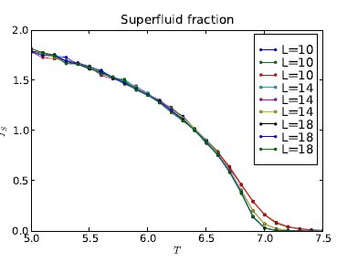
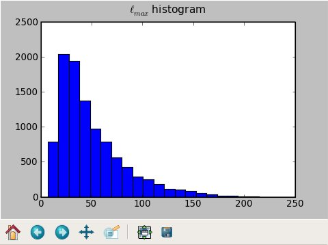
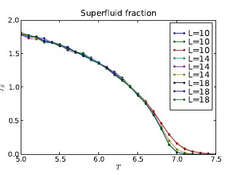
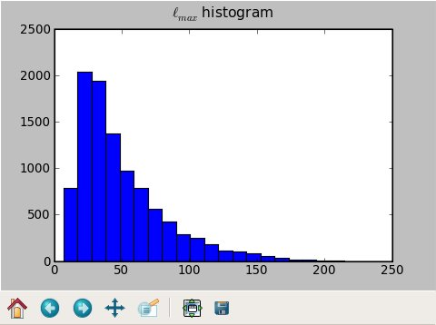
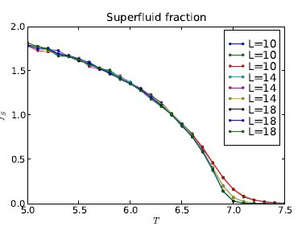

pgr is a simple program to display one-dimensional numerical data to the screen or to an encapsulated PostScript (.eps) file. It is simply a wrapper around the 1D-plotting functionality of the pylab module, which strives to emulate much Matlab functionality within Python: see also pylab documentation.
Here are some screenshots:


Here is the main script, written in Python: pgr. You will also need this file I/O module: tabutil_m.py. Save these with the file names just given, chmod +x pgr, and put them in your PATH.
You also need Python and pylab. I am using Python 2.5.2 successfully. To find out if you have pylab, follow these instructions:
shell_prompt$ python >>> import pylabIf you get another >>> prompt, you have pylab; if not, you don’t. Presumably the version number of pylab matters; I don’t know what version is required. I use pgr successfully within the UA math department Linux network; you should be able to do so as well.
I prefer pgr over Matlab because Matlab is expensive (and thus not available on all machines I use), monolithic and slow to start up, and cumbersome. Using pgr which is a thin wrapper around some very nice open-source Python code I didn’t have to write, I can direct data (printed by any program in any language) straight into a plotter and look at the results within an eyeblink. pgr starts up quickly, reads from standard input, and is scriptable.
Data may be displayed to the screen or to an .eps file. I am using the latter, on a large scale, for presentation graphics in my doctoral dissertation.
While pylab has support for 2D contour plots, my pgr wrapper doesn’t yet handle this (but easily could be modified to do so).
The version of pylab I’m using does not appear to support 2D surface plots at all. So, I still have reason to use Matlab from time to time.
When the data size is large (e.g. 100,000 lines), pgr is slow. For such data I sometimes prefer to use xgr, a quick-and-dirty plotter: it has fewer features but permits a quicker look at the data.
pgr takes as input one or more vectors, and creates an X/Y plot of them. The user specifies whether:
For example, suppose an input data file is as follows:
1 2 3 7 5 9
With -n, pgr plots two lines: (1,1) (2,3) (3,5), and (1,2) (2,7) (3,9).
Without -n, pgr plots one line: (1,2) (3,7) (5,9).
Usage: ./pgr [options] [file name]
Use "-" as file name, or omit it, if input is stdin.
Options:
--help Print this message.
-title {title text} Specify plot title.
-xlabel {x label text} Specify x label.
-ylabel {y label text} Specify y label.
-labels 'x y1 y2' Specify legend labels.
-flabels Take x label and legend labels from data file.
-width {inches} Specify figure width.
-height {inches} Specify figure height.
-xmin {xmin}: Specify manual bounds.
-xmax {xmax}: Specify manual bounds.
-ymin {ymin}: Specify manual bounds.
-ymax {ymax}: Specify manual bounds.
-n Take x coordinate from line number.
-l Draw lines only.
-p Draw points only.
-lp Draw lines and points.
-lines Line-draw mode. Input should be
quadruples of x1 y1 x2 y2.
-ms {n} Marker size (default 5) for points.
-formats '- -- o' Specify pylab-style marker formats.
Examples:
- solid line -- dashed line -. dash-dot line
: dotted line . points o circle symbols
s square symbols + plus symbols x cross symbols
See help(pylab.plot) inside Python for more information.
-colors 'red blue green' Specify line colors.
-errorbar 1st column is x, 2nd is y, 3rd is err(y).
-bar Plot a bar chart.
-barwidth {w} Specify bar width for -bar.
-grid Include a background grid.
-1ox,-1my Compute 1/input or 1-output before plotting.
-logx,-logy,-loglog Plot log of input, output, or both.
-o {file name} Write file instead of graphing.
Formats: .png, .eps.
-dpi {number} Dots per inch for -o.
This example uses some of my Perl scripts to generate and transform data.
phatgen 256 10 40 | pfft -fo | pgr -n -xmax 256
phatgen 256 10 40 | pfft -fo | pgr -n -xmax 256 -width 8 -height 3 -o sinc.eps
I am actively using pgr, and I add features to it as they become necessary. I do not see suppport for 2D surface plots in the near future.
pgr is released under the terms of the BSD 3-clause license. Please see the file LICENSE.txt for more details.
John Kerl
math.arizona.edu/~kerl
kerl.john.r@gmail.com